The feel
This is the look of a storybook drawn by someone who owns only sixteen felt tips. King's Quest took its characters from fairy tales such as the Billy Goats Gruff and Hansel and Gretel,1,2 and Mark Ferrari, handed EGA's 16 fixed colours at Lucasfilm in 1987, wondered what he could draw with them except a bad children's book or an acid trip.3 A small hero goes around rocks and climbs trees, and his legs vanish when he steps behind a rock. You steer him with the arrow keys and type commands such as "take a carrot" on the bottom lines of the screen.1
Two colours in a checkerboard read as a third, which let Loom's 16 colours pass for 256.3 Julia Minamata, who drew The Crimson Diamond in the same palette, compares it to pointillism: up close the colours stay separate bright dots, from a distance they blend, and they never go muddy the way mixed paint does.4 Some of the original artists disliked the limit, but she remembers the games from childhood as fun, colourful and bright.4 They were also unforgiving: King's Quest IV kills its heroine at almost every turn, and one pixel too far on a climb means a fall.5
- flat
- bright
- typed
- wry
- beige box
- unforgiving
Where it comes from
IBM asked Sierra for a game to show off the colour graphics of its new PCjr, and King's Quest was the answer: you walk a hero around each room with the arrow keys or a joystick and type every other command.1,2 Its rooms were drawn in coloured pencil, traced with a graphics tablet and stored as drawing instructions, because finished pictures would have taken far more disk space.2,1 Sierra's SCI engine, which arrived with King's Quest IV in 1988, doubled the resolution from 160 x 200 to 320 x 200, and that game also got a full score written for the Roland MT-32.5 At Lucasfilm, Maniac Mansion offered a clickable list of verbs instead of a parser, and the dithered backgrounds Mark Ferrari drew for Loom were jokingly called the studio's new house style.6,3 In 1990 King's Quest V moved Sierra to 256-colour VGA and point-and-click, which left Quest for Glory II as its last parser game in 16 colours.7
Core elements
Sixteen fixed colours
Every picture uses the same 16 colours, and none of them can be changed.8,3 Mark Ferrari, who started drawing with them at Lucasfilm in 1987, listed them as black, dark and light grey, white, dark and light blue, cyan, yellow, mustard brown, dark red, poppy red, peach, magenta, acid-hot pink, grass green and acid-chartreuse.3 Julia Minamata, who kept strictly to them for The Crimson Diamond, says every pixel has to count.4
Checkerboard dither
Two colours alternating in a checkerboard read as a third, so a few of the 16 can stand in for many more.3 Sierra's SCI engine let artists mix any two colours this way, and Hero's Quest leaned on it heavily.8 At Lucasfilm, Mark Ferrari placed most of Loom's dither patterns by hand, pixel by pixel.9
Pictures drawn as lines and fills
Sierra stored its backgrounds as drawing instructions rather than images, traced from the artist's drawing and replayed as lines and then fills.1,8 On a slow machine you can watch a room draw itself, following the stylus of whoever traced it.2
Priority screen for depth
Each picture hides a priority screen that says how near every part of the scene is, and a character's priority follows how far down the screen their feet are.8 Walk behind a rock and the hero's legs disappear; walk in front and he covers part of the rock.1
Colour scheme per location
With only 16 colours on screen, Loom gives every guild its own scheme: emerald for the glassmakers, pastoral greens for the shepherds, Stygian reds for the blacksmiths, saturated blues and purples for the weavers.10 Brian Moriarty wanted its opening panorama in monochrome blue, with only the last leaf on the tree in another colour.9
Status line and text parser
A status line runs along the top and the bottom lines take your typing, so the picture sits between two strips of text.11 You type short verb-noun sentences such as "look at the river" and get answers like "The river is swift and deep."1 Early versions printed replies in the bottom lines; later ones open a window over the picture.11
How to do it
Set up the screen
For early Sierra games, draw at 160 x 200 and show each pixel two screen pixels wide, keeping the picture to the 168 lines between the status line and the input lines.5,11 For the SCI look, use 320 x 200.5 Sierra meant both to be seen at 4:3, although 320 x 200 with square pixels is 16:10, so stretch the finished image vertically.12
Draw pixel by pixel on screen
Use a hard pencil that sets whole pixels, which keeps the hard, jagged edges an anti-aliased brush would smooth away.4 Julia Minamata skips paper sketches for this kind of art and works straight on screen, where, she says, EGA art looks best.4
Plan the picture as lines and fills
Sierra's artists drew each room in coloured pencil and traced it with a graphics tablet, which turned the drawing into instructions; the game then redraws it point by point and fills in the colour.2,1 SCI0 pictures are a series of such drawing commands, and a fill only covers areas that have not been filled yet, so plan the picture around it.8
Dither by hand
Where the palette has no colour for a sky or a shadow, checkerboard two that it has. Mark Ferrari changed Lucasfilm's mind with a twilight scene, a rising moon over oak-covered hills, done entirely in dithered gradients.3 He placed most of Loom's patterns pixel by pixel, and the soft CRT monitors of the day smoothed them, so they look harsher up close today.9 In SCI0 each picture can carry 4 palettes of 40 colours, dithered mixes included, so one picture can serve for day and night.8
Animate in loops and cels
Build each character as a view: a set of loops, each a run of cels. Mirror the walking-right loop to get walking left, which halves the work and saves memory.13 Gary Winnick gave Maniac Mansion's cast oversized heads so their personalities came across at low resolution.6
Set up the priority bands
Priority follows how far down the screen a character's feet are. AGI has 12 bands, from 4 at the back to 15 at the front, each 12 lines tall from line 48 down; SCI uses 0 to 15.14,8 Control lines drawn on the same hidden screen mark where the hero can walk.13 Walk-behind areas do the same job with a baseline: the character is drawn behind the area only when standing behind that line.15
Build the vocabulary
Sort the words the game understands into numbered groups of synonyms, and give it a group of words to ignore, such as a, the, with and my, so "poke the bush with the stick" reads as "poke bush stick".13 Put several synonyms in every group: it spares players the type-till-you-bleed frustration of many parser games.13
Cheat sheet
- Dither
- Two-colour checkerboards; SCI0 gives each picture 4 palettes of 408
- Picture area
- AGI: 168 of 200 lines, status line above, 3 input lines below11
- Text
- AGI: 40 x 25 characters, 8 x 8 screen pixels each11
- Room data
- King's Quest: 470 to 2,400 bytes of drawing instructions per room1
- Sound
- PC speaker plays only the first of AGI's 3 music voices13
Do
- Mix the colours the palette lacks from checkerboards of two, as Ferrari did for Loom.3
- Study the originals up close. In this kind of art you can see exactly where every pixel is and what colour it is.4
- Reward intent: if the hero is standing right next to something, assume that is what the player means to use.16
- Keep the danger, but make it survivable for a clever, observant player.16
Avoid
- A 17th colour, however close. The Crimson Diamond sticks to a strict 16.4
- Anti-aliasing and soft brushes, which blur the hard, jagged edges the look depends on.4
- Painting, scanning and shrinking the art. Minamata says later VGA games that did this came out blurry, while EGA art made on screen stayed sharp.4
- A parser that knows one word per object, so "pick up bush", "pick up plant" and "pick up shrubbery" all fail.6
- Puzzles you can only solve by dying first. Ron Gilbert called them bad design.16
Tools and tutorials
- ScummVM
Runs the originals, AGI and SCI included, on modern machines.
- AGI Studio
Open-source tools for building real AGI games, with a picture editor.
- SCI Programming
SCI Companion and tutorials for making SCI0 games today.
- Adventure Game Studio
The free engine The Crimson Diamond was built with.4
- Lospec: Color Graphics Adapter
These same 16 colours, ready to load in any pixel editor.
Palette
The eight colours doing most of the work in King's Quest. The chart below holds all 16 and every two-colour mix. Point at one to read it, click to copy both hex values.
Feel the vibe
Listen
On a standard PC, AGI played only the first of a song's three voices, through the internal speaker.13
YouTubeThe EGA version through the PC speaker, so one voice of beeps does all the work.13
YouTubeWilliam Goldstein's score, written for the Roland MT-32 and arguably the first full score for a computer game.5
YouTubeMichael Land's score as an AdLib card played it. Compare it with the speaker tracks above.
YouTubeLoom's music is drawn from Swan Lake,10 and Brian Moriarty sent its arranger, George Sanger, the scores of seven or so movements.3 This is that music played by an orchestra.
YouTube
More references
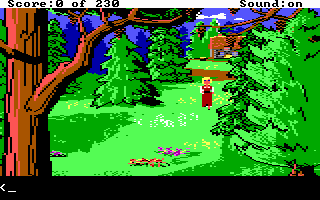
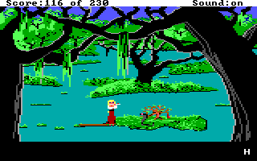
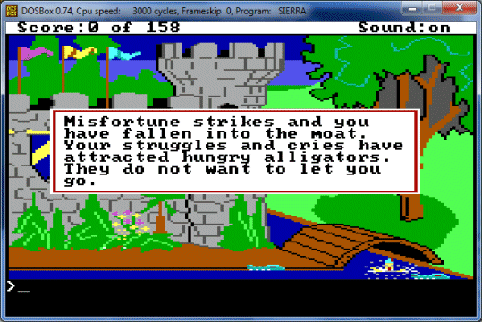
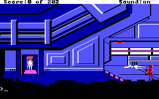
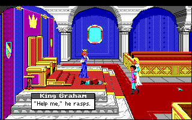
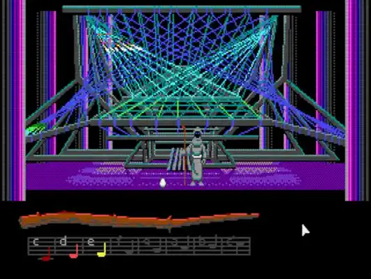
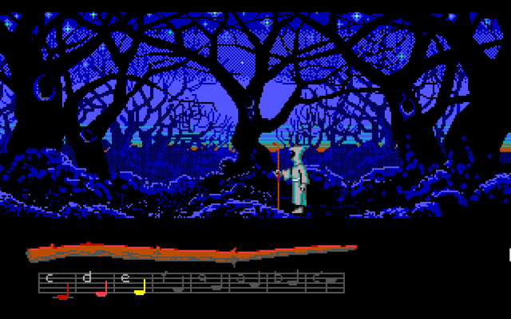
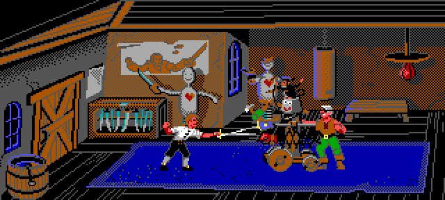
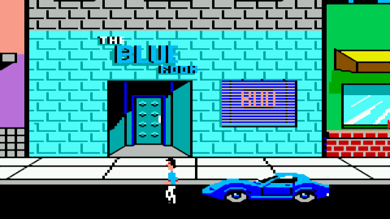
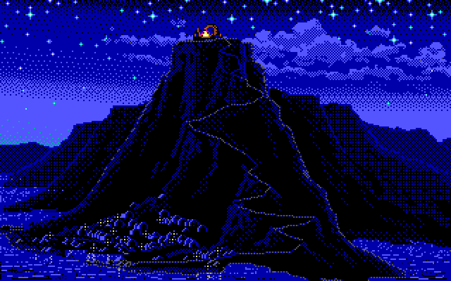
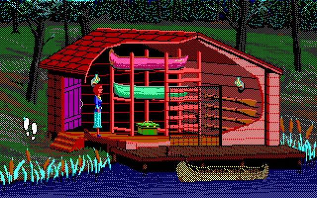
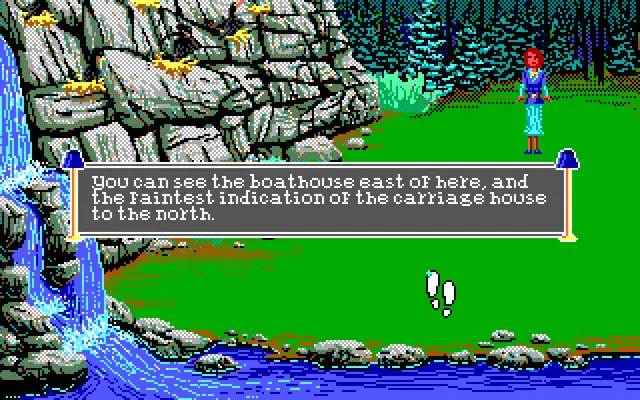
Games
- King's Quest
Where it starts: the first AGI game, with a hero you walk and commands you type.2
- Space Quest: The Sarien Encounter
Study how it does science fiction in the same flat colours as King's Quest.
- Police Quest: In Pursuit of the Death Angel
Study how the same look handles offices, bars and streets.
- Maniac Mansion
The first SCUMM game, with a list of verbs in place of a parser.6
- King's Quest IV: The Perils of Rosella
One of Sierra's first three SCI games, at 320 by 200.5 Study its forests and night scenes.
- Indiana Jones and the Last Crusade
Study the catacombs and Castle Brunwald in the EGA version, then compare the VGA remake.
- Loom
No verbs and no inventory, only musical drafts,10 in backgrounds dithered until 16 colours looked like 256.3
- The Secret of Monkey Island
Play the EGA release and compare it with the VGA version.
- The Crimson Diamond
A modern mystery with a text parser, in a strict 16-colour EGA palette.4
Film, art and more
- Enhanced Graphics Adapter
IBM's card, which showed 16 colours at once from a palette of 64.7
- IBM PCjr
The home computer King's Quest was made to show off. It flopped.1,2
- Roberta Williams
Designer of King's Quest, who built its story from familiar fairy tales.1
- Mark Ferrari
The Lucasfilm background artist whose dithered EGA art for Loom became the studio's new house style. He drew it in Deluxe Paint II, then the standard tool for 2D game art.3
- Sleeping Beauty
Eyvind Earle's backgrounds were the model for Loom's look.3,10
- Computer Chronicles
For the look and sound of the beige-box years.
Sources
- 1Inside King's Quest
- 2The Unmaking and Remaking of Sierra On-Line
- 3LucasArts' Secret History #4: Loom, Developer Reflections
- 4Creating Pixelated Perfection with Julia Minamata
- 5Sierra Gets Creative
- 6A New Force in Games, Part 3: SCUMM
- 7So You Want to Be a Hero?
- 8Pic Editor
- 9Loom EGA/VGA comparison
- 10Loom (or, how Brian Moriarty Proved That Less is Sometimes More)
- 11Displaying text on screen
- 12Aspect Ratio
- 13Data used by AGI
- 14Priorities
- 15Getting Started with AGS, Part 2
- 16Why Adventure Games Suck And What We Can Do About It